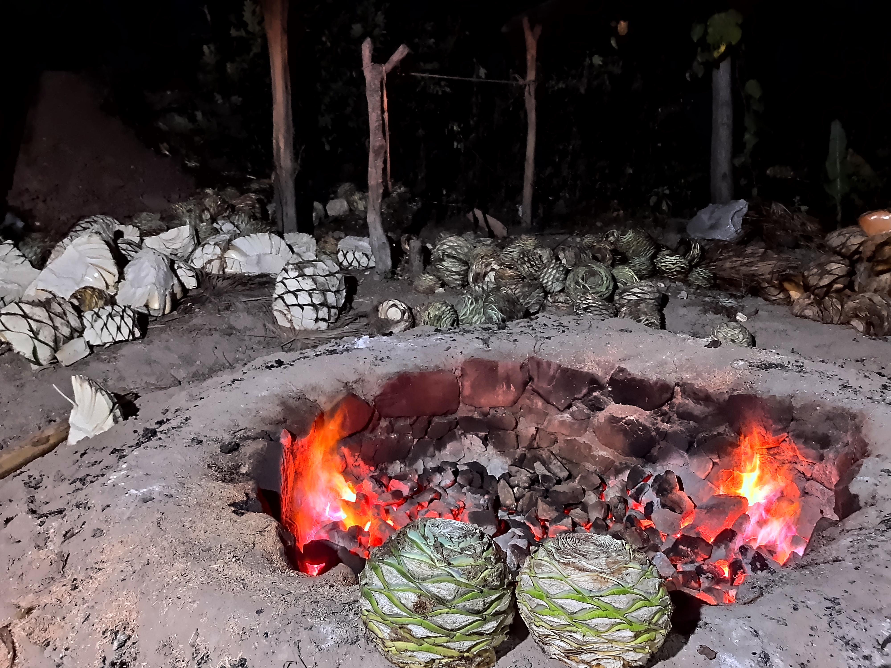

Mezcal Artesanal
| Cocción | |
| Despues de haber cortado las piñas, estás se trasladan al horno previamente calentado para poder cocerlas. Dejadolo ahí por 4 o 5 días, bien tapado para evitar fugas de vapor. | |
  |
|
Inicio |